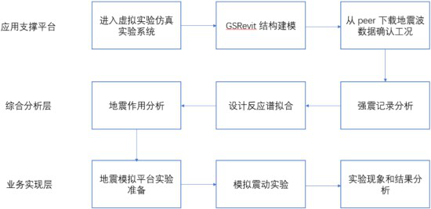

1、应用支撑平台：应用支撑平台主要包括应用开发平台（基础数据管理，报表管理，工作流管理，表单工具等等）和中间件（应用服务器、消息中间件、Web 服务器）。通过建设应用支撑虚拟实验仿真平台，实现界面集成，应用集成，数据以及流程集成。通过四个集成达到郭伟所有系统集成效果
2、综合分析层：由真实数据出发，通过软件模拟实现情景再现， 对数据进行采集，优化，进一步完善数据处理工作。
3、业务实现层：通过采集好的数据，上传至虚拟实验仿真平台。通过虚拟实验平台，进行模拟地震实验，然后进一步采集数据，获取
实验现象以及结果，最终对实验结果进行现象分析，完成实验
·√ VR
·√ AR
·√ MR
·√ 3D仿真
·√ 二维动画
·√ HTML5
· 其它
·√ Unity3D
·√ 3D Studio Max
·√ Maya
·√ ZBrush
·√ SketchUp
·√ Adobe Flash
·√ Unreal Development Kit
·√ Animate CC
·√ Blender
·√ Visual Studio
·√ 其他
· 服务器 : CPU 8 核、内存 16 GB、独立显存 4G、 硬盘：500G 以上
· 操作系统 : √Windows Server √Linux
· 数据库 ： Mysql
模型面数：12
贴图分辨率：1024*512
每帧渲染次数：2
动作反馈时间：50ms
显示刷新率60hz
分辨率：1280*720